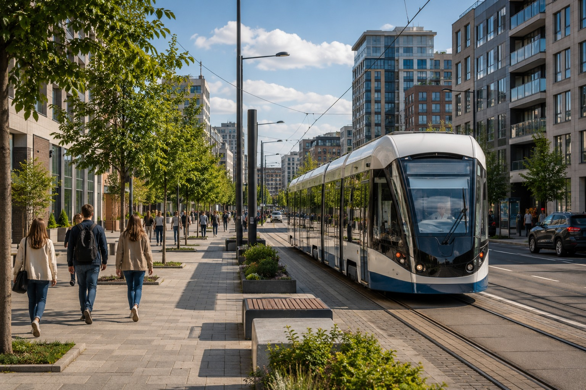
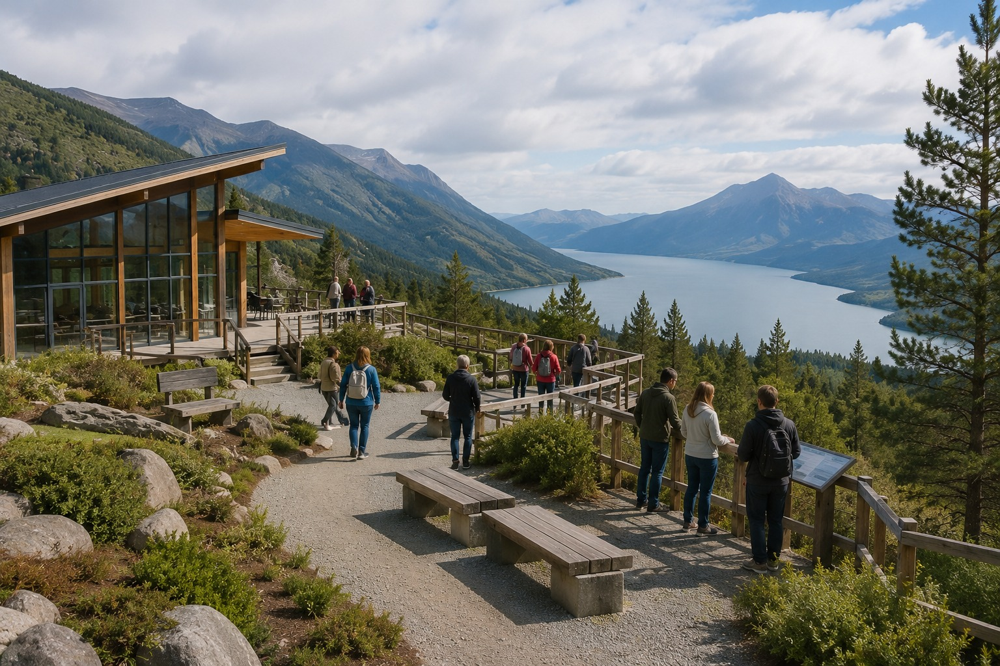
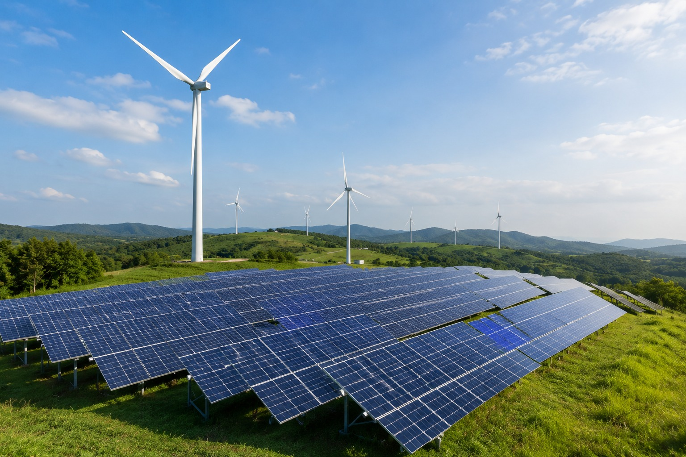
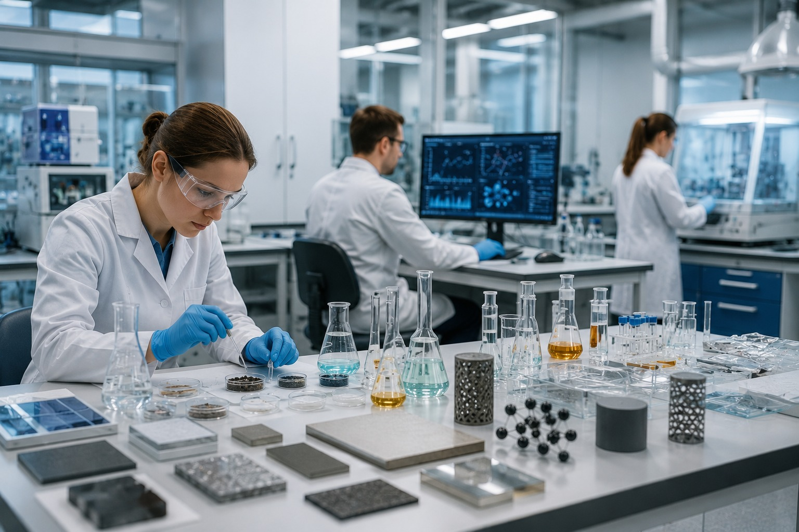
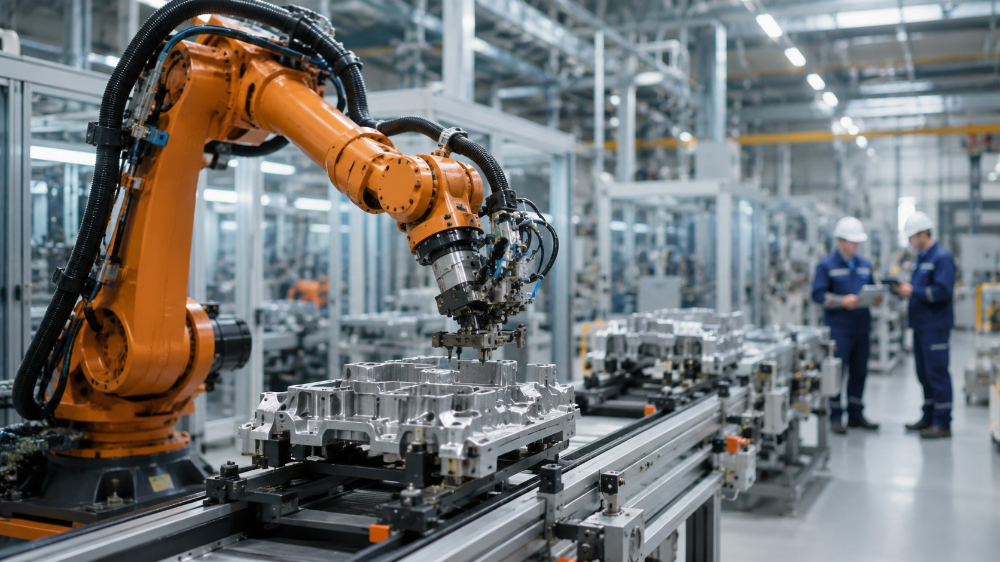
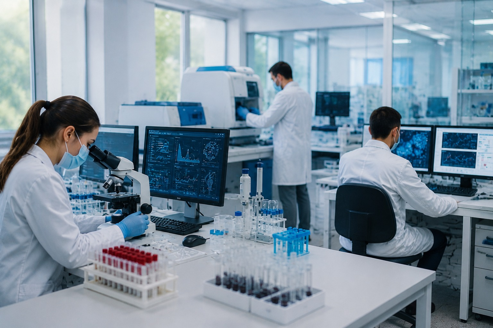

Транспорт, производство, экспорт, данные и технологии работают как одна цепочка.
Регионы и экономика
Развитие видно на карте страны
Здесь можно увидеть, как транспорт, промышленность, агросектор, технологии и экология связаны с качеством жизни в регионах.

Что здесь можно узнать
Как экономика становится видимой для человека
Выберите регион и посмотрите демонстрационную связку направления, проекта и эффекта.
Экономика дает рабочие места, дороги, сервисы, туризм и устойчивую городскую среду.
Слои развития
Переключите тему
Слои показывают, что региональное развитие нельзя свести к одной отрасли.

Регионы
Территории и качество жизни
Развитие региона видно через среду, услуги, дороги, туризм и рабочие места.
инфраструктуратуризмсреда
Выбор региона
Посмотрите демонстрационную связку направлений
Это не официальный рейтинг регионов, а способ увидеть, какие темы можно проверить в региональных и федеральных источниках.
Как искать региональные данные
Сначала вопрос, потом источник
На сайте показаны направления, а не официальный реестр объектов. Реальные данные нужно сверять на портале нацпроектов, в материалах Правительства РФ, региональных источниках и бюджетных данных.
Какая дорога, маршрут или логистическая связь проверяется?
Как направление связано с производством, занятостью или экспортом?
Какой показатель, территория или мера указаны в источнике?

Транспорт
140 тыс. км опорной сети дорог как ориентир транспортной связности.

Туризм
140 млн туристических поездок к 2030 году как целевой ориентир.

Экология
пример направления: отходы, чистая среда и природные ресурсы.

Промышленность
Материалы, оборудование и кадры поддерживают отрасли.

Технологии
Данные, автоматизация и новые отрасли создают основу развития.

Технологии здоровья
Лаборатории, диагностика и медицинские технологии дополняют промышленный контур.
Кадрылюди и навыки
Производствооборудование и отрасли
Транспортмаршруты и логистика
Экспортрынки и стандарты
Данныесервисы и управление
Технологииновые рынки